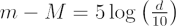

The apparent magnitude of a celestial object, such as a star or galaxy, is the brightness measured by an observer at a specific distance from the object. The smaller the distance between the observer and object, the greater the apparent brightness.
Interactive: Calculate apparent magnitude, absolute magnitude, or distance using the distance modulus.
Two objects that have the same apparent magnitude, as seen from the Earth, may either be:
- At the same distance from the Earth, with the same luminosity.
- At different distances from the Earth, with different values of luminosity (a less luminous object that is very close to the Earth may appear to be as bright as a very luminous object that is a long distance away).
To convert the apparent magnitude, m, of a star into a real magnitude for the star (absolute magnitude, M), we need to know the distance, d to the star. Alternatively, if we know the distance and the absolute magnitude of a star, we can calculate its apparent magnitude. Both calculations are made using:

with m – M known as the distance modulus and d measured in parsecs.
The apparent magnitudes, absolute magnitudes and distances for selected stars are listed below:
| Star | mv | Mv | d (pc) |
|---|---|---|---|
| Sun | -26.8 | 4.83 | 0 |
| Alpha Centauri | -0.3 | 4.1 | 1.3 |
| Canopus | -0.72 | -3.1 | 30.1 |
| Rigel | 0.14 | -7.1 | 276.1 |
| Deneb | 1.26 | -7.1 | 490.8 |
Although Rigel and Deneb have the same real brightness (the same absolute magnitude), Rigel appears brighter than Deneb on the sky (it has a smaller apparent magnitude) because it is much closer to the Earth.